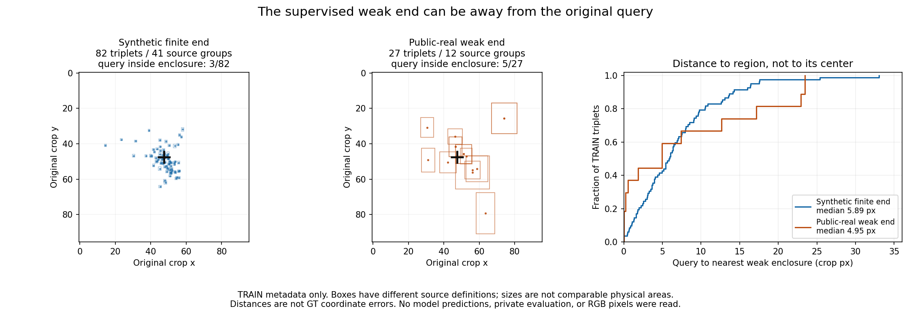

새 모델 성능 개선은 아직 미확인. 이번에는 실제 SOURCE TRAIN에서 query·native·weak-end·원8점 출처의 대응을 확인했습니다. 새 학습·추론·PnP는 실행하지 않았습니다.
전체 한국어 보고서 · 결과와 해시 · 109쌍 CSV

상자 거리는 GT 좌표 오차가 아닙니다. 합성과 공개 실사 상자의 정의도 다릅니다. 사람이 평가한 native D/E 권위는 그대로 유지합니다.
같은 D1,147/E90 query. legacy는 과거 real-CAL 참조군입니다. 새 평가 또는 독립 blind 결과가 아닙니다.
| 모델 | D 재현율 | E 재현율 | E 정밀도 |
|---|---|---|---|
| v61 | 22.67% | 97.78% | 9.03% |
| legacy | 57.11% | 92.22% | 20.65% |
| C55 | 72.45% | 41.11% | 10.48% |
| C57 | 63.56% | 57.78% | 11.06% |
| C59 | 52.57% | 43.33% | 6.69% |
합성 원 q8는 GT 투영이 아니라 실제 동결 초기 검출기의 출력입니다. 공개 실사는 기존 source 입력 facts와의 저장값 join을 확인했습니다. 동일 원 group·native 순서·availability를 보존해야 합니다. 한 query만 이동시키는 증강에서는 other7이 인위적 offset 단서를 남길 수 있으며, 이것이 실제 모델의 실패 원인이라고 입증된 것은 아닙니다.
다음은 원 초기8점의 공간 관계와 RGB를 함께 읽는 작은 head 및 대응 대조군 준비입니다. end 상자·GT 좌표를 모델 입력에 넣거나 query를 정답으로 옮기지 않습니다.